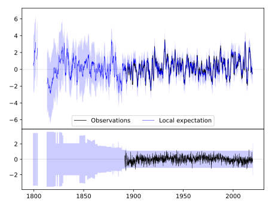
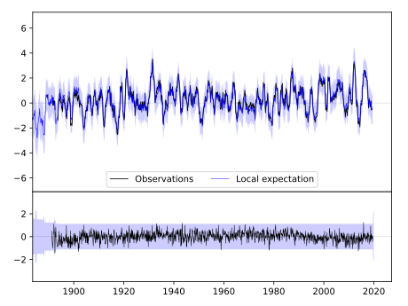
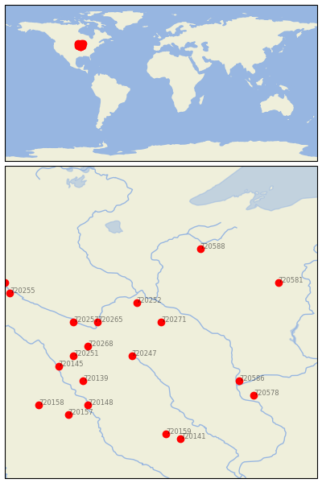

ZUMBROTA [USA]


| Neighbour | Name | Country | Distance | Lon/Lat | Years |
|---|
| 720271 | ZUMBROTA | USA | 0 | -92.7, 44.3 | 1891-2019 |
| 720252 | FARMINGTON 3 NW | USA | 59 | -93.2, 44.7 | 1888-2019 |
| 720247 | ALBERT LEA 3 SE | USA | 91 | -93.3, 43.6 | 1885-2019 |
| 720265 | ST PETER | USA | 103 | -94.0, 44.3 | 1877-2019 |
| 720268 | WINNEBAGO | USA | 132 | -94.2, 43.8 | 1893-2019 |
| 720257 | NEW ULM 2 SE | USA | 143 | -94.5, 44.3 | 1864-2019 |
| 720251 | FAIRMONT | USA | 163 | -94.5, 43.6 | 1887-2019 |
| 720588 | SPOONER AG RES STN | USA | 178 | -91.9, 45.8 | 1893-2019 |
| 720586 | PRAIRIE DU CHIEN | USA | 185 | -91.1, 43.1 | 1822-2019 |
| 720139 | ALGONA 3 W | USA | 185 | -94.3, 43.1 | 1861-2019 |
| 720145 | ESTHERVILLE 2 N | USA | 195 | -94.8, 43.4 | 1893-2019 |
| 720581 | MEDFORD | USA | 209 | -90.3, 45.1 | 1890-2019 |
| 720148 | FORT DODGE 5NNW | USA | 224 | -94.2, 42.6 | 1851-2019 |
| 720578 | LANCASTER 4 WSW | USA | 226 | -90.8, 42.8 | 1872-2019 |
| 720255 | MONTEVIDEO 1 SW | USA | 254 | -95.8, 44.9 | 1889-2019 |
| 720159 | TOLEDO 3N | USA | 255 | -92.6, 42.0 | 1893-2019 |
| 720157 | ROCKWELL CITY | USA | 261 | -94.6, 42.4 | 1893-2019 |
| 720254 | MILAN 1 NW | USA | 268 | -95.9, 45.1 | 1893-2019 |
| 720141 | BELLE PLAINE | USA | 268 | -92.3, 41.9 | 1889-2019 |
| 720158 | STORM LAKE 2 E | USA | 276 | -95.2, 42.6 | 1889-2019 |